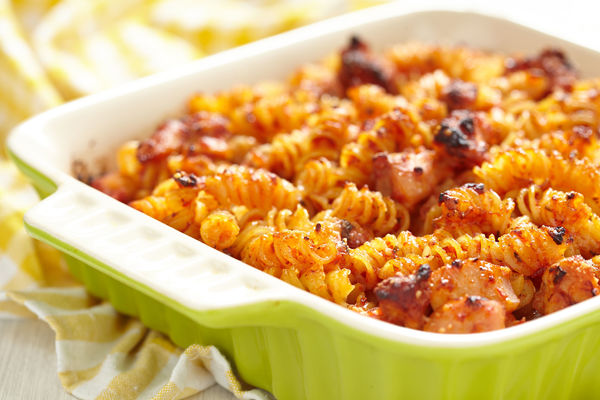

Recipes
Here is two of my favorite Recipes that I would like to share.
BBQ Baked Chicken Pasta
Ingreidents
- 2 Cups: Rotisserie Chicken
- 14.5 oz can, drained: Diced Tomatoes
- 15.25 oz can, drained: Corn
- 1/2: Onion
- 1 1/2 Cups: Ranch
- 1 Cup: BBQ Sauce
- 16 oz: Fusilli
- 2 Cups: Mozzarella Cheese
- Pepper
Instructions
- Heat oven to 350 degrees Farenheight.
- Cook Fusilli to specifications on box.
- Mix chicken, tomatoes, corn, onion, ranch, BBQ sauce into large bowl.
- Once pasta is finished cooking, add to large bowl from step 3.
- Place contents into a large caserole dish.
- Cover with mozzarella cheese.Add pepper.
- Cook for 30 mins.
- Enjoy!
Here is a link to the recipie

Croque Monsieur Sliders
Ingreidents
- 12: Hawaiian Sweet Rolls
- 12 slices: Ham
- 9 slices: Swiss Cheese
- 2 Tbsp: Butter
- 1 Tbsp: Flower
- 1 Cup: Milk
- 1 Tbsp: Dijon
- Salt
- 2 Cloves: Garlic
Instructions
- Heat oven to 375 degrees.
- Cut entire package of sweet rolls in half.
- Place bottom half of sweet roll bread in a caserole dish.
- Lay the ham slices evenly across.
- Lay swiss cheese slices evenly across.
- Melt 1 Tbsp of butter. Mix in the flour, milk ,and dijon.
- Pour dijon mixure over the swiss cheese, then cover it with the other slice of bread.
- Place sandwich into oven for 8 minutes.
- While sliders are in the oven, add the remaining Tbsp of butter and garli cloves together.
- Microwave them for 30 seconds.
- Once complete , take sliders out of oven. Proceed to brush them with the garlic butter.
- Enjoy!
Here is a link to the recipie